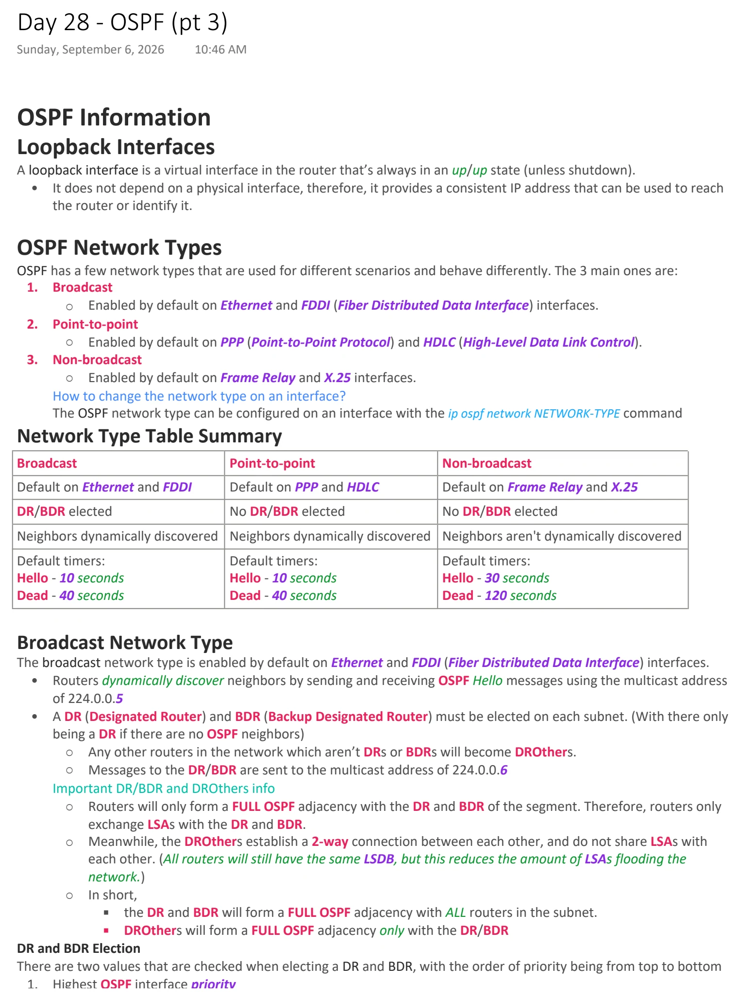
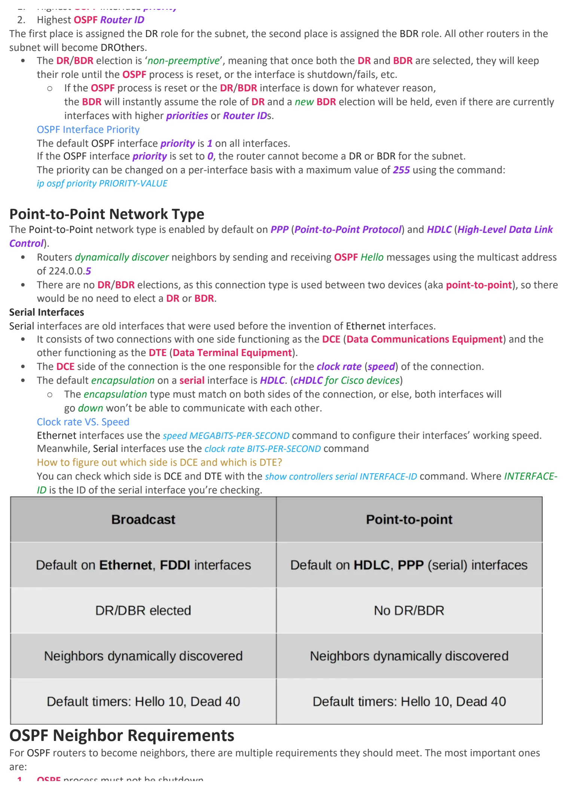
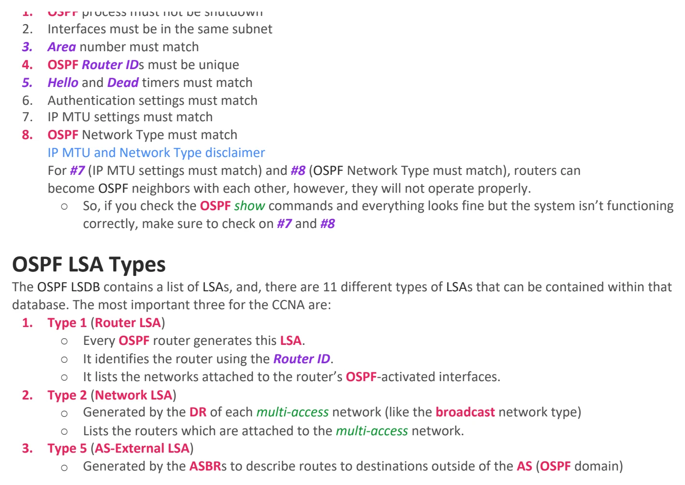

OSPF (pt 3)
Download original PDF


Text view — OSPF (pt 3)
Extracted from the original export. Diagrams and some formatting appear in the notes above.
Day 28 - OSPF (pt 3) Sunday, September 6, 2026 10:46 AM OSPF Information Loopback Interfaces A loopback interface is a virtual interface in the router that’s always in an up/up state (unless shutdown). • It does not depend on a physical interface, therefore, it provides a consistent IP address that can be used to reach the router or identify it. OSPF Network Types OSPF has a few network types that are used for different scenarios and behave differently. The 3 main ones are: 1. Broadcast ○ Enabled by default on Ethernet and FDDI (Fiber Distributed Data Interface) interfaces. 2. Point-to-point ○ Enabled by default on PPP (Point-to-Point Protocol) and HDLC (High-Level Data Link Control). 3. Non-broadcast ○ Enabled by default on Frame Relay and X.25 interfaces. How to change the network type on an interface? The OSPF network type can be configured on an interface with the ip ospf network NETWORK-TYPE command Network Type Table Summary Broadcast Point-to-point Non-broadcast Default on Ethernet and FDDI Default on PPP and HDLC Default on Frame Relay and X.25 DR/BDR elected No DR/BDR elected No DR/BDR elected Neighbors dynamically discovered Neighbors dynamically discovered Neighbors aren't dynamically discovered Default timers: Default timers: Default timers: Hello - 10 seconds Hello - 10 seconds Hello - 30 seconds Dead - 40 seconds Dead - 40 seconds Dead - 120 seconds Broadcast Network Type The broadcast network type is enabled by default on Ethernet and FDDI (Fiber Distributed Data Interface) interfaces. • Routers dynamically discover neighbors by sending and receiving OSPF Hello messages using the multicast address of 224.0.0.5 • A DR (Designated Router) and BDR (Backup Designated Router) must be elected on each subnet. (With there only being a DR if there are no OSPF neighbors) ○ Any other routers in the network which aren’t DRs or BDRs will become DROthers. ○ Messages to the DR/BDR are sent to the multicast address of 224.0.0.6 Important DR/BDR and DROthers info ○ Routers will only form a FULL OSPF adjacency with the DR and BDR of the segment. Therefore, routers only exchange LSAs with the DR and BDR. ○ Meanwhile, the DROthers establish a 2-way connection between each other, and do not share LSAs with each other. (All routers will still have the same LSDB, but this reduces the amount of LSAs flooding the network.) ○ In short, § the DR and BDR will form a FULL OSPF adjacency with ALL routers in the subnet. § DROthers will form a FULL OSPF adjacency only with the DR/BDR DR and BDR Election There are two values that are checked when electing a DR and BDR, with the order of priority being from top to bottom 1. Highest OSPF interface priority 2. Highest OSPF Router ID The first place is assigned the DR role for the subnet, the second place is assigned the BDR role. All other routers in the subnet will become DROthers. • The DR/BDR election is ‘non-preemptive’, meaning that once both the DR and BDR are selected, they will keep their role until the OSPF process is reset, or the interface is shutdown/fails, etc. ○ If the OSPF process is reset or the DR/BDR interface is down for whatever reason, the BDR will instantly assume the role of DR and a new BDR election will be held, even if there are currently interfaces with higher priorities or Router IDs. OSPF Interface Priority The default OSPF interface priority is 1 on all interfaces. If the OSPF interface priority is set to 0, the router cannot become a DR or BDR for the subnet. The priority can be changed on a per-interface basis with a maximum value of 255 using the command: ip ospf priority PRIORITY-VALUE Point-to-Point Network Type The Point-to-Point network type is enabled by default on PPP (Point-to-Point Protocol) and HDLC (High-Level Data Link Control). • Routers dynamically discover neighbors by sending and receiving OSPF Hello messages using the multicast address of 224.0.0.5 • There are no DR/BDR elections, as this connection type is used between two devices (aka point-to-point), so there would be no need to elect a DR or BDR. Serial Interfaces Serial interfaces are old interfaces that were used before the invention of Ethernet interfaces. • It consists of two connections with one side functioning as the DCE (Data Communications Equipment) and the other functioning as the DTE (Data Terminal Equipment). • The DCE side of the connection is the one responsible for the clock rate (speed) of the connection. • The default encapsulation on a serial interface is HDLC. (cHDLC for Cisco devices) ○ The encapsulation type must match on both sides of the connection, or else, both interfaces will go down won’t be able to communicate with each other. Clock rate VS. Speed Ethernet interfaces use the speed MEGABITS-PER-SECOND command to configure their interfaces’ working speed. Meanwhile, Serial interfaces use the clock rate BITS-PER-SECOND command How to figure out which side is DCE and which is DTE? You can check which side is DCE and DTE with the show controllers serial INTERFACE-ID command. Where INTERFACE- ID is the ID of the serial interface you’re checking. OSPF Neighbor Requirements For OSPF routers to become neighbors, there are multiple requirements they should meet. The most important ones are: 1. OSPF process must not be shutdown 2. Interfaces must be in the same subnet 3. Area number must match 4. OSPF Router IDs must be unique 5. Hello and Dead timers must match 6. Authentication settings must match 7. IP MTU settings must match 8. OSPF Network Type must match IP MTU and Network Type disclaimer For #7 (IP MTU settings must match) and #8 (OSPF Network Type must match), routers can become OSPF neighbors with each other, however, they will not operate properly. ○ So, if you check the OSPF show commands and everything looks fine but the system isn’t functioning correctly, make sure to check on #7 and #8 OSPF LSA Types The OSPF LSDB contains a list of LSAs, and, there are 11 different types of LSAs that can be contained within that database. The most important three for the CCNA are: 1. Type 1 (Router LSA) ○ Every OSPF router generates this LSA. ○ It identifies the router using the Router ID. ○ It lists the networks attached to the router’s OSPF-activated interfaces. 2. Type 2 (Network LSA) ○ Generated by the DR of each multi-access network (like the broadcast network type) ○ Lists the routers which are attached to the multi-access network. 3. Type 5 (AS-External LSA) ○ Generated by the ASBRs to describe routes to destinations outside of the AS (OSPF domain) Day 28 - OSPF (pt 3) Sunday, September 6, 2026 10:46 AM OSPF Information Loopback Interfaces A loopback interface is a virtual interface in the router that’s always in an up/up state (unless shutdown). • It does not depend on a physical interface, therefore, it provides a consistent IP address that can be used to reach the router or identify it. OSPF Network Types OSPF has a few network types that are used for different scenarios and behave differently. The 3 main ones are: 1. Broadcast ○ Enabled by default on Ethernet and FDDI (Fiber Distributed Data Interface) interfaces. 2. Point-to-point ○ Enabled by default on PPP (Point-to-Point Protocol) and HDLC (High-Level Data Link Control). 3. Non-broadcast ○ Enabled by default on Frame Relay and X.25 interfaces. How to change the network type on an interface? The OSPF network type can be configured on an interface with the ip ospf network NETWORK-TYPE command Network Type Table Summary Broadcast Point-to-point Non-broadcast Default on Ethernet and FDDI Default on PPP and HDLC Default on Frame Relay and X.25 DR/BDR elected No DR/BDR elected No DR/BDR elected Neighbors dynamically discovered Neighbors dynamically discovered Neighbors aren't dynamically discovered Default timers: Default timers: Default timers: Hello - 10 seconds Hello - 10 seconds Hello - 30 seconds Dead - 40 seconds Dead - 40 seconds Dead - 120 seconds Broadcast Network Type The broadcast network type is enabled by default on Ethernet and FDDI (Fiber Distributed Data Interface) interfaces. • Routers dynamically discover neighbors by sending and receiving OSPF Hello messages using the multicast address of 224.0.0.5 • A DR (Designated Router) and BDR (Backup Designated Router) must be elected on each subnet. (With there only being a DR if there are no OSPF neighbors) ○ Any other routers in the network which aren’t DRs or BDRs will become DROthers. ○ Messages to the DR/BDR are sent to the multicast address of 224.0.0.6 Important DR/BDR and DROthers info ○ Routers will only form a FULL OSPF adjacency with the DR and BDR of the segment. Therefore, routers only exchange LSAs with the DR and BDR. ○ Meanwhile, the DROthers establish a 2-way connection between each other, and do not share LSAs with each other. (All routers will still have the same LSDB, but this reduces the amount of LSAs flooding the network.) ○ In short, § the DR and BDR will form a FULL OSPF adjacency with ALL routers in the subnet. § DROthers will form a FULL OSPF adjacency only with the DR/BDR DR and BDR Election There are two values that are checked when electing a DR and BDR, with the order of priority being from top to bottom 1. Highest OSPF interface priority 2. Highest OSPF Router ID The first place is assigned the DR role for the subnet, the second place is assigned the BDR role. All other routers in the subnet will become DROthers. • The DR/BDR election is ‘non-preemptive’, meaning that once both the DR and BDR are selected, they will keep their role until the OSPF process is reset, or the interface is shutdown/fails, etc. ○ If the OSPF process is reset or the DR/BDR interface is down for whatever reason, the BDR will instantly assume the role of DR and a new BDR election will be held, even if there are currently interfaces with higher priorities or Router IDs. OSPF Interface Priority The default OSPF interface priority is 1 on all interfaces. If the OSPF interface priority is set to 0, the router cannot become a DR or BDR for the subnet. The priority can be changed on a per-interface basis with a maximum value of 255 using the command: ip ospf priority PRIORITY-VALUE Point-to-Point Network Type The Point-to-Point network type is enabled by default on PPP (Point-to-Point Protocol) and HDLC (High-Level Data Link Control). • Routers dynamically discover neighbors by sending and receiving OSPF Hello messages using the multicast address of 224.0.0.5 • There are no DR/BDR elections, as this connection type is used between two devices (aka point-to-point), so there would be no need to elect a DR or BDR. Serial Interfaces Serial interfaces are old interfaces that were used before the invention of Ethernet interfaces. • It consists of two connections with one side functioning as the DCE (Data Communications Equipment) and the other functioning as the DTE (Data Terminal Equipment). • The DCE side of the connection is the one responsible for the clock rate (speed) of the connection. • The default encapsulation on a serial interface is HDLC. (cHDLC for Cisco devices) ○ The encapsulation type must match on both sides of the connection, or else, both interfaces will go down won’t be able to communicate with each other. Clock rate VS. Speed Ethernet interfaces use the speed MEGABITS-PER-SECOND command to configure their interfaces’ working speed. Meanwhile, Serial interfaces use the clock rate BITS-PER-SECOND command How to figure out which side is DCE and which is DTE? You can check which side is DCE and DTE with the show controllers serial INTERFACE-ID command. Where INTERFACE- ID is the ID of the serial interface you’re checking. OSPF Neighbor Requirements For OSPF routers to become neighbors, there are multiple requirements they should meet. The most important ones are: 1. OSPF process must not be shutdown 2. Interfaces must be in the same subnet 3. Area number must match 4. OSPF Router IDs must be unique 5. Hello and Dead timers must match 6. Authentication settings must match 7. IP MTU settings must match 8. OSPF Network Type must match IP MTU and Network Type disclaimer For #7 (IP MTU settings must match) and #8 (OSPF Network Type must match), routers can become OSPF neighbors with each other, however, they will not operate properly. ○ So, if you check the OSPF show commands and everything looks fine but the system isn’t functioning correctly, make sure to check on #7 and #8 OSPF LSA Types The OSPF LSDB contains a list of LSAs, and, there are 11 different types of LSAs that can be contained within that database. The most important three for the CCNA are: 1. Type 1 (Router LSA) ○ Every OSPF router generates this LSA. ○ It identifies the router using the Router ID. ○ It lists the networks attached to the router’s OSPF-activated interfaces. 2. Type 2 (Network LSA) ○ Generated by the DR of each multi-access network (like the broadcast network type) ○ Lists the routers which are attached to the multi-access network. 3. Type 5 (AS-External LSA) ○ Generated by the ASBRs to describe routes to destinations outside of the AS (OSPF domain) Day 28 - OSPF (pt 3) Sunday, September 6, 2026 10:46 AM OSPF Information Loopback Interfaces A loopback interface is a virtual interface in the router that’s always in an up/up state (unless shutdown). • It does not depend on a physical interface, therefore, it provides a consistent IP address that can be used to reach the router or identify it. OSPF Network Types OSPF has a few network types that are used for different scenarios and behave differently. The 3 main ones are: 1. Broadcast ○ Enabled by default on Ethernet and FDDI (Fiber Distributed Data Interface) interfaces. 2. Point-to-point ○ Enabled by default on PPP (Point-to-Point Protocol) and HDLC (High-Level Data Link Control). 3. Non-broadcast ○ Enabled by default on Frame Relay and X.25 interfaces. How to change the network type on an interface? The OSPF network type can be configured on an interface with the ip ospf network NETWORK-TYPE command Network Type Table Summary Broadcast Point-to-point Non-broadcast Default on Ethernet and FDDI Default on PPP and HDLC Default on Frame Relay and X.25 DR/BDR elected No DR/BDR elected No DR/BDR elected Neighbors dynamically discovered Neighbors dynamically discovered Neighbors aren't dynamically discovered Default timers: Default timers: Default timers: Hello - 10 seconds Hello - 10 seconds Hello - 30 seconds Dead - 40 seconds Dead - 40 seconds Dead - 120 seconds Broadcast Network Type The broadcast network type is enabled by default on Ethernet and FDDI (Fiber Distributed Data Interface) interfaces. • Routers dynamically discover neighbors by sending and receiving OSPF Hello messages using the multicast address of 224.0.0.5 • A DR (Designated Router) and BDR (Backup Designated Router) must be elected on each subnet. (With there only being a DR if there are no OSPF neighbors) ○ Any other routers in the network which aren’t DRs or BDRs will become DROthers. ○ Messages to the DR/BDR are sent to the multicast address of 224.0.0.6 Important DR/BDR and DROthers info ○ Routers will only form a FULL OSPF adjacency with the DR and BDR of the segment. Therefore, routers only exchange LSAs with the DR and BDR. ○ Meanwhile, the DROthers establish a 2-way connection between each other, and do not share LSAs with each other. (All routers will still have the same LSDB, but this reduces the amount of LSAs flooding the network.) ○ In short, § the DR and BDR will form a FULL OSPF adjacency with ALL routers in the subnet. § DROthers will form a FULL OSPF adjacency only with the DR/BDR DR and BDR Election There are two values that are checked when electing a DR and BDR, with the order of priority being from top to bottom 1. Highest OSPF interface priority 2. Highest OSPF Router ID The first place is assigned the DR role for the subnet, the second place is assigned the BDR role. All other routers in the subnet will become DROthers. • The DR/BDR election is ‘non-preemptive’, meaning that once both the DR and BDR are selected, they will keep their role until the OSPF process is reset, or the interface is shutdown/fails, etc. ○ If the OSPF process is reset or the DR/BDR interface is down for whatever reason, the BDR will instantly assume the role of DR and a new BDR election will be held, even if there are currently interfaces with higher priorities or Router IDs. OSPF Interface Priority The default OSPF interface priority is 1 on all interfaces. If the OSPF interface priority is set to 0, the router cannot become a DR or BDR for the subnet. The priority can be changed on a per-interface basis with a maximum value of 255 using the command: ip ospf priority PRIORITY-VALUE Point-to-Point Network Type The Point-to-Point network type is enabled by default on PPP (Point-to-Point Protocol) and HDLC (High-Level Data Link Control). • Routers dynamically discover neighbors by sending and receiving OSPF Hello messages using the multicast address of 224.0.0.5 • There are no DR/BDR elections, as this connection type is used between two devices (aka point-to-point), so there would be no need to elect a DR or BDR. Serial Interfaces Serial interfaces are old interfaces that were used before the invention of Ethernet interfaces. • It consists of two connections with one side functioning as the DCE (Data Communications Equipment) and the other functioning as the DTE (Data Terminal Equipment). • The DCE side of the connection is the one responsible for the clock rate (speed) of the connection. • The default encapsulation on a serial interface is HDLC. (cHDLC for Cisco devices) ○ The encapsulation type must match on both sides of the connection, or else, both interfaces will go down won’t be able to communicate with each other. Clock rate VS. Speed Ethernet interfaces use the speed MEGABITS-PER-SECOND command to configure their interfaces’ working speed. Meanwhile, Serial interfaces use the clock rate BITS-PER-SECOND command How to figure out which side is DCE and which is DTE? You can check which side is DCE and DTE with the show controllers serial INTERFACE-ID command. Where INTERFACE- ID is the ID of the serial interface you’re checking. OSPF Neighbor Requirements For OSPF routers to become neighbors, there are multiple requirements they should meet. The most important ones are: 1. OSPF process must not be shutdown 2. Interfaces must be in the same subnet 3. Area number must match 4. OSPF Router IDs must be unique 5. Hello and Dead timers must match 6. Authentication settings must match 7. IP MTU settings must match 8. OSPF Network Type must match IP MTU and Network Type disclaimer For #7 (IP MTU settings must match) and #8 (OSPF Network Type must match), routers can become OSPF neighbors with each other, however, they will not operate properly. ○ So, if you check the OSPF show commands and everything looks fine but the system isn’t functioning correctly, make sure to check on #7 and #8 OSPF LSA Types The OSPF LSDB contains a list of LSAs, and, there are 11 different types of LSAs that can be contained within that database. The most important three for the CCNA are: 1. Type 1 (Router LSA) ○ Every OSPF router generates this LSA. ○ It identifies the router using the Router ID. ○ It lists the networks attached to the router’s OSPF-activated interfaces. 2. Type 2 (Network LSA) ○ Generated by the DR of each multi-access network (like the broadcast network type) ○ Lists the routers which are attached to the multi-access network. 3. Type 5 (AS-External LSA) ○ Generated by the ASBRs to describe routes to destinations outside of the AS (OSPF domain)